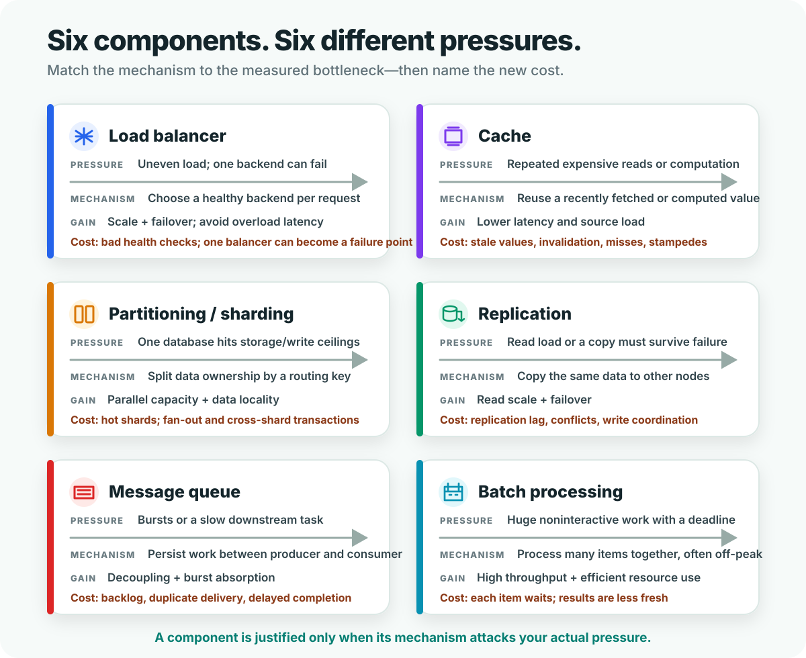
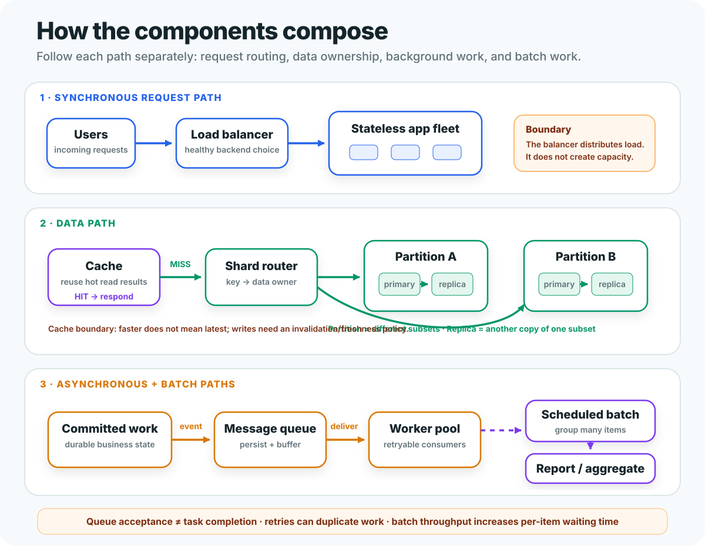

What is actually saturated, slow, unavailable, or too large?
Two-diagram mental model
Components are mechanisms, not decorations.
A load balancer, cache, shard, replica, queue, and batch job solve different pressures. The interview skill is to connect observed pressure → mechanism → benefit → new failure mode.
Distribution, reuse, split ownership, copying, buffering, or grouping?
Staleness, coordination, hot spots, retries, backlog, or waiting time?
Choose the component from the pressure
Read each card from top to bottom. Components that share a benefit are not interchangeable because their mechanisms—and therefore their limits—are different.

Most-confused pair: partitioning stores different subsets on different owners; replication stores another copy of the same subset. Partition for capacity. Replicate that partition for failover or read scale.
Compose paths without mixing guarantees
One product may use several components, but each affects only its own boundary. Trace a synchronous request, a data operation, and background work independently.

Interview narration: “The write becomes durable first. Then I publish asynchronous work. Consumers are idempotent because delivery may repeat. Analytics can run in a batch because its deadline is morning, not per-request.”
Can you select the mechanism under pressure?
The diagnostic uses production situations, not component-name trivia. Explanations stay hidden until submission.
Start the 20-question diagnostic →